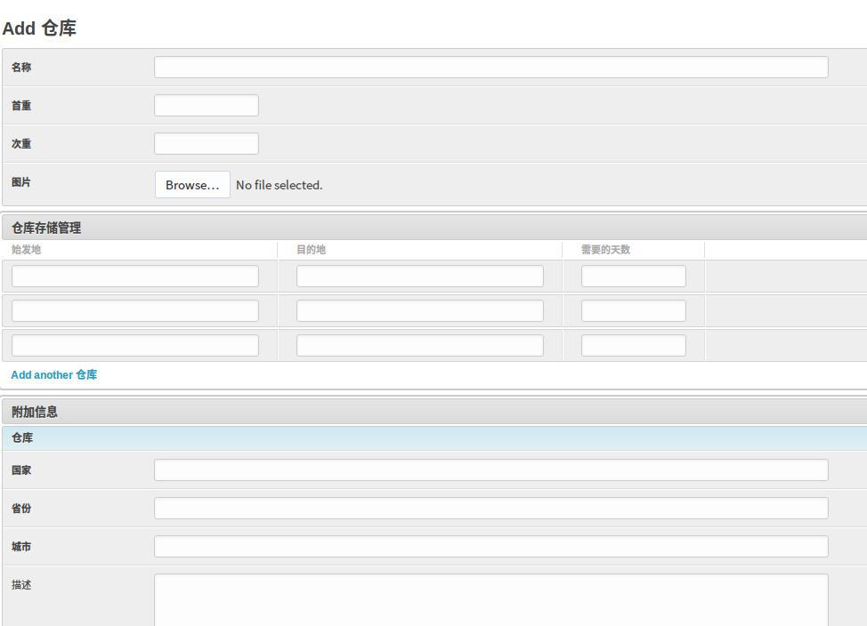
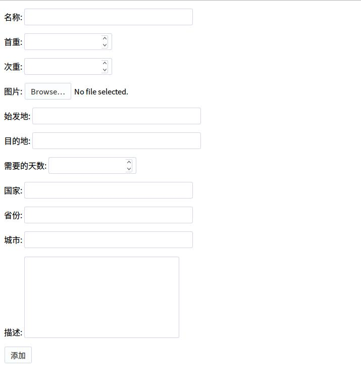
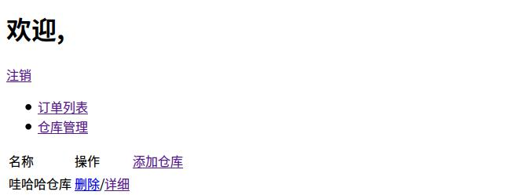

关于在同1个页面多个表单提交的问题,实际上是项目中遇到的1个小问题。关于这个问题,主要有2个需要解决的问题:
- 多个表单的渲染问题
- 多个表单提交时外键的处理问题
下面我们分别进行说明。
当时在建模的时候使用了类似如下的方式:
from django.db import models
class Store(models.Model):
name = models.CharField('名称', max_length=20)
first = models.FloatField('首重')
additional = models.FloatField('次重')
img = models.ImageField('图片', upload_to='store/1')
class Depot(models.Model):
s_name = models.ForeignKey(Store, verbose_name='仓库')
src = models.CharField('始发地', max_length=20)
dest = models.CharField('目的地', max_length=20)
days = models.PositiveSmallIntegerField('需要的天数')
class Address(models.Model):
s_name = models.ForeignKey(Store, verbose_name='仓库')
country = models.CharField('国家', max_length=20)
state = models.CharField('省份', max_length=10)
city = models.CharField('城市', max_length=10)
description = models.TextField('描述', blank=True)在这里,1个仓库的数据主要由3个表组成,分别为它的一些基础信息,可以配送的范围、天数及其他一些附加信息组成。然后其页面如下所示:

多表单渲染
而公司的需求就是我们要在商户端上让客户在创建仓库时填写上述的内容,由于我比较懒,而公司给出的时间也不是很充裕,于是直接使用ModelForm来实现,而不需要一一的创建表单了。换句话说,我们要将多个模型表在同1个页面中渲染出来,对于这样的问题,主要有4种解决的方案:
- 在1个form组件中使用多个模型表单类
- 使用django提供的modelform_factory来解决
- 使用第3方插件django-betterforms或django-multipleformwizard这样的插件
- 使用元类,然后继承BaseForm进行表单的重写。
这里我们使用第1种解决方案来实现多个表单渲染的问题。
这里我们在forms模块下新建3个模型表单类:
from django.forms import ModelForm
from models import Store, Address, Depot
class StoreForm(ModelForm):
class Meta:
model = Store
fields = '__all__'
class AddressForm(ModelForm):
class Meta:
model = Address
exclude = ['s_name']
class DepotForm(ModelForm):
class Meta:
model = Depot
exclude = ['s_name']然后在视图中引入这3个表单:
from django.shortcuts import render_to_response, HttpResponseRedirect
from django.template import RequestContext
from forms import StoreForm, AddressForm, DepotForm
def store_add(req):
if req.method == 'POST':
...
else:
sf = StoreForm()
af = AddressForm()
df = DepotForm()
return render_to_response('store_add.html', {
'sf': sf, 'af': af, 'df': df,
}, context_instance=RequestContext(req))默认情况下,我们先将对应的表单渲染出来先。在这里我们往模板中输出了多个变量,然后在模板中手动进行如下的处理:
<form action="" method='post' enctype='multipart/form-data'>
{% csrf_token %}
{{ sf.as_p }}
{{ df.as_p }}
{{ af.as_p }}
<input type="submit" value = "添加" />
</form>在这里,我们在1个表单中输出多个表单,其页面如下所示:

可以看到其效果与后台的页面相差不是很大,只是没有对应的样式而已。
多表单提交外键处理
接着我们需要处理多个表单提交时的处理问题。
def store_add(req):
if req.method == 'POST':
sf = StoreForm(req.POST, req.FILES)
af = AddressForm(req.POST)
df = DepotForm(req.POST)
if sf.is_valid() and af.is_valid() and df.is_valid():
sf.save()
df.save()
af.save()
return HttpResponseRedirect('store')
...在这里我们直接对这3个表单进行保存,结果出现了这样1个错误。
NOT NULL constraint failed: app_depot.s_name_id
由于我们使用了1个外键进行了约束,而使用上述的方式会导致数据表中的s_name_id的字段数值为NULL,从而导致了错误。而上述的方式时直接就提交给数据库了,导致后面的外键无法被满足。为了解决这个问题,我们采用延迟提交给数据库的方式:
def store_add(req):
if req.method == 'POST':
...
if sf.is_valid() and af.is_valid() and df.is_valid():
form = sf.save(commit=False)
sf.save()
dform = df.save(commit=False)
dform.s_name = form
dform.save()
aform = af.save(commit=False)
aform.s_name = form
aform.save()
return HttpResponseRedirect('store')
else:
...在这里,我们先让第1张表先不提交,将其保存为1个变量form中。而第2个张表也先不提交,我们将其实例的s_name修改为之前的第1张表返回的结果,然后再进行保存。这样我们就实现了多张表的依赖导致的问题了。最后我们使用重定向的方式将成功添加后的页面跳转到该商户的仓库列表中。
其跳转后的页面如下所示:

这样我们就解决了在1个页面提交多个表单的问题。实际关于Django在1个页面提交多个表单的问题,实际上问题不是很多,只要解决了渲染和提交时处理的问题,实际这个问题就迎刃而解了。重要的是如何拆分问题和解决问题的思路。
参考文章:
http://stackoverflow.com/questions/16511399/django-multi-form-save